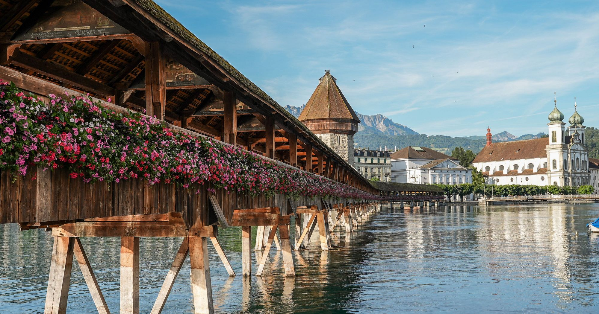

มนต์เสน่ห์ริมทะเลสาบ
ลูเซิร์นเป็นเมืองที่มีชีวิตชีวาและงดงามราวกับภาพวาด ตั้งอยู่ริมทะเลสาบสี่รัฐ โอบล้อมด้วยเทือกเขาแอลป์อันตระการตา เมืองนี้ผสมผสานสถาปัตยกรรมยุคกลางเข้ากับดีไซน์ร่วมสมัยได้อย่างลงตัว สร้างเสน่ห์ที่ไม่เหมือนใคร
ไฮไลท์ที่ไม่ควรพลาด
ยอดเขาพิลาตุส
ขึ้นสู่ "ภูเขามังกร" ด้วยรถไฟฟันเฟืองที่ชันที่สุดในโลก
อนุสาวรีย์สิงโต
เยี่ยมชมประติมากรรมสิงโตที่แกะสลักบนหน้าผาหินทราย
ย่านเมืองเก่า
เดินเล่นในตรอกซอกซอย ชมอาคารเก่าแก่สีสันสดใส